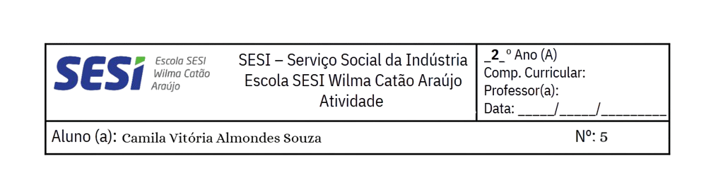

Me chamo Camila Vitória Almondes Souza, nasci no dia 12 de junho de 2008, sempre morei em Picos-PI. Eu sou filha única de Aline Almondes e Carlos de Souza Almondes.
Sobre a minha escolaridade, passei a estudar no Éden e, quando cheguei ao meu jardim de infância, estudei na Escola Joaquim Nicolau. Cheguei na escola SESI a partir do 1º ano do ensino fundamental no ano de 2015.
No SESI eu obtive muito aprendizado e grandes amizades que carrego comigo até os dias de hoje.
Atualmente estou cursando o curso técnico de informática para internet e a 3ª série do ensino médio, buscando evoluir cada vez mais nos meus estudos, com muita determinação para futuramente me tornar uma excelente profissional.